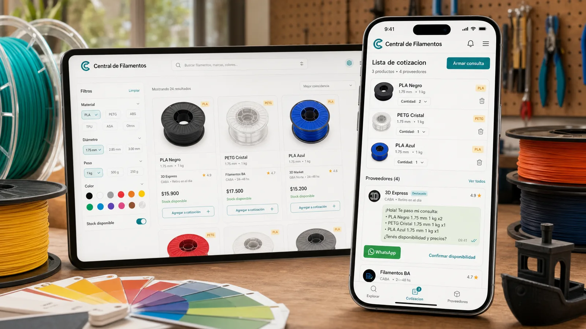

Stock Central
Una fricción real del mercado 3D resuelta con backend automatizado y runtime estático.
- Rol
- Producto, ingesta, frontend y CI/CD
- Restricción
- Fuentes heterogéneas y costo mínimo
- Entrega
- Herramienta comunitaria 100% estática

Encontrar un color podía exigir preguntar proveedor por proveedor.
El filamento combina marcas, materiales, colores y presentaciones. Con desabastecimiento e importaciones trabadas, buscar stock se volvió una tarea repetitiva para compradores y makers.
El dato existía
Algunos distribuidores publicaban planillas o páginas con stock. La información estaba disponible, pero fragmentada y con formatos distintos.
El producto faltaba
Centralizar las fuentes habilitó búsqueda, comparación, armado de pedidos y avisos sobre variantes necesarias.
La arquitectura debía ser barata antes que sofisticada.
-
Mover el backend a jobs
La lógica corre cuatro veces al día en GitHub Actions. No existe un servidor permanente esperando tráfico.
01 -
Separar conectores por fuente
Sheets, HTML de proveedores y catálogo oficial se procesan con reglas propias y un contrato común de salida.
02 -
Frenar publicaciones sospechosas
Quality gates detectan cambios bruscos, errores de schema y caídas anómalas antes de actualizar el sitio público.
03
Herramientas elegidas para capturar, validar y publicar.
Frontend
Backend en jobs
Ingesta
Enriquecimiento
Infra y deploy
Calidad de datos
Resultado. Una herramienta comunitaria útil para compradores y makers, actualizada automáticamente y sin backend permanente.